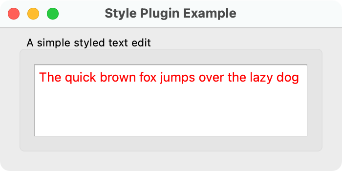

Style Plugin Example
This example shows how to create a plugin that extends Qt with a new GUI look and feel.

A plugin in Qt is a class stored in a shared library that can be loaded by a QPluginLoader at run-time. When you create plugins in Qt, they either extend a Qt application or Qt itself. Writing a plugin that extends Qt itself is achieved by inheriting one of the plugin base classes, reimplementing functions from that class, and adding a macro. In this example we extend Qt by adding a new GUI look and feel (i.e., making a new QStyle available). A high-level introduction to plugins is given in the plugin overview document.
Plugins that provide new styles inherit the QStylePlugin base class. Style plugins are loaded by Qt and made available through QStyleFactory; we will look at this later. We have implemented SimpleStylePlugin, which provides SimpleStyle. The new style contributes to widget styling by changing the text color of the text edit widget to red - not a major contribution, but it still makes a new style.
The new style is platform agnostic in the sense that it is not based on any specific style implementation, but uses QProxyStyle to merely tweak the looks in the current application style that defaults to the native system style.
Note: On some platforms, the native style may overwrite some custom stylings, e.g., button background color. In that case, try to run your application in another style (e.g., fusion). You may do this by passing -style fusion as a command line argument to your application.
We test the plugin with StyleWindow, in which we display a QTextEdit. The SimpleStyle and StyleWindow classes do not contain any plugin specific functionality and their implementations are trivial; we will therefore leap past them and head on to the SimpleStylePlugin and the main() function. After we have looked at that, we examine the plugin's .pro file.
SimpleStylePlugin Class Definition
SimpleStylePlugin inherits QStylePlugin and is the plugin class.
class SimpleStylePlugin : public QStylePlugin { Q_OBJECT Q_PLUGIN_METADATA(IID "org.qt-project.Qt.QStyleFactoryInterface" FILE "simplestyle.json") public: SimpleStylePlugin() = default; QStringList keys() const; QStyle *create(const QString &key) override; };
keys() returns a list of style names that this plugin can create, while create() takes such a string and returns the QStyle corresponding to the key. Both functions are pure virtual functions reimplemented from QStylePlugin. When an application requests an instance of the SimpleStyle style, which this plugin creates, Qt will create it with this plugin.
SimpleStylePlugin Class Implementation
Here is the implementation of keys():
QStringList SimpleStylePlugin::keys() const { return {"SimpleStyle"}; }
Since this plugin only supports one style, we return a QStringList with the class name of that style.
Here is the create() function:
QStyle *SimpleStylePlugin::create(const QString &key) { if (key.toLower() == "simplestyle") return new SimpleStyle; return nullptr; }
Note that the key for style plugins are case insensitive. The case sensitivity varies from plugin to plugin, so you need to check this when implementing new plugins.
The main() function
int main(int argv, char *args[]) { QApplication app(argv, args); QStyle *style = QStyleFactory::create("simplestyle"); if (!style) qFatal("Cannot load the 'simplestyle' plugin."); QApplication::setStyle(style); StyleWindow window; window.resize(350, 50); window.show(); return app.exec(); }
Qt loads the available style plugins when the QApplication object is initialized. The QStyleFactory class knows about all styles and produces them with create() (it is a wrapper around all the style plugins).
The Simple Style Plugin's QMake Project File
The SimpleStylePlugin lives in its own directory and has its own .pro file:
TEMPLATE = lib
CONFIG += plugin
QT += widgets
HEADERS = simplestyle.h \
simplestyleplugin.h
SOURCES = simplestyle.cpp \
simplestyleplugin.cpp
TARGET = simplestyleplugin
In the plugin .pro file we need to set the lib template as we are building a shared library instead of an executable. We must also set the config to plugin. We set the library to be stored in the styles folder next to the main executable because this is a path in which Qt will search for style plugins.
Using CMake to Set up the Simple Style Plugin
When using CMake, we use qt_add_plugin to create the simplestyleplugin plugin:
qt_add_plugin(simplestyleplugin
CLASS_NAME SimpleStylePlugin
simplestyle.cpp simplestyle.h
simplestyleplugin.cpp simplestyleplugin.h
)
On Windows and Linux, we place the plugin into the styles folder next to the main executable, i.e., styleplugin.exe:
set_target_properties(simplestyleplugin PROPERTIES
LIBRARY_OUTPUT_DIRECTORY "$<TARGET_FILE_DIR:styleplugin>/styles"
)
And on macOS, we store the simplestyleplugin into the Contents/PlugIns/styles folder of the App Bundle.
set_target_properties(simplestyleplugin PROPERTIES
LIBRARY_OUTPUT_DIRECTORY "$<TARGET_BUNDLE_CONTENT_DIR:styleplugin>/PlugIns/styles"
)
Note: On macOS, when creating an App Bundle, store the plugins in the PlugIns folder and not next to the main executable in the MacOS folder as the latter will cause issues during signing and distribution of the app.
Related Articles and Examples
In addition to the plugin overview document, we have other examples and articles that concern plugins.
In the echo plugin example we show how to implement plugins that extends Qt applications rather than Qt itself, which is the case with the style plugin of this example.